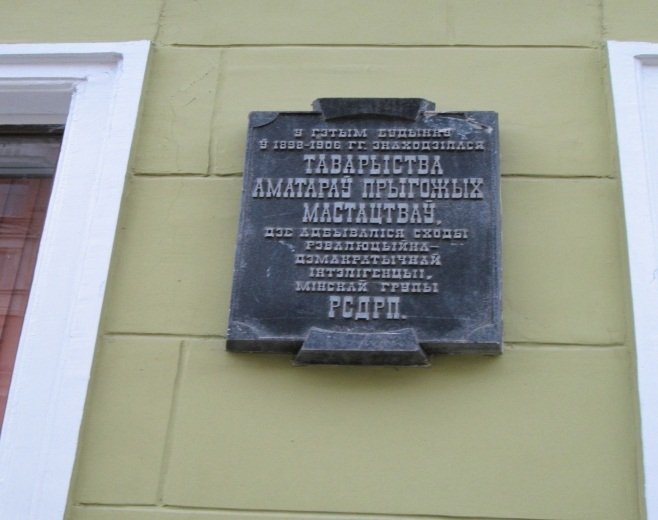
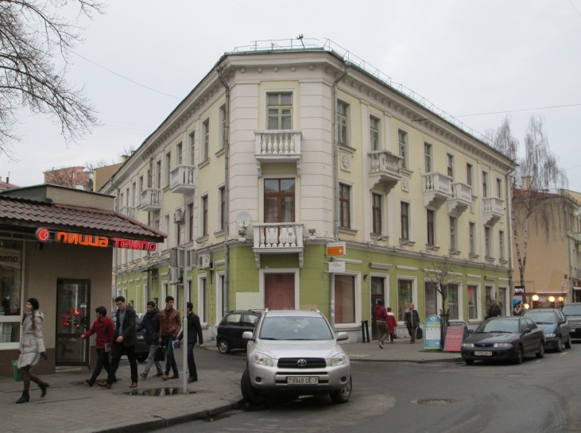

In this house there was The society of lovers of fine arts since 1898, which was the heart of literary and theatrical culture of the city. [9, p. 109] The society was divided into four sections: artistic, dramatic, literary and musical. It is known that one of the members of the society (which, by the way, reached the number of 400 members in 1 year) was a famous artist and teacher Jacob Kruger. The most active section was literary, which was engaged in the publication of magazines, brochures, leaflets; its participants were printed in the newspaper «North-West region» and held literary meetings. It was the members of the society who initiated the establishment of monuments to Ostrovsky and Pushkin in the city. By the way, the activity of the drama section began with Ostrovsky's play «Poverty is not a Vice», staged in this building. But the society of lovers of fine arts had not only cultural and educational direction, but also political, which caused close attention to the organization from the city authorities. In 1906, the city police chief came to see the perfomance. In was restless times (there was a revolution of 1905), and the law enforcement officer «was lucky» to come when all hall chanted «Down with autocracy!». But, as members of the society later recalled, it was nothing to do with a political rally, it was just because the audience was so shocked by reading and discussing Chekhov's works. It is difficult to judge whether this was the case, only after this event the activity of the Society was banned. But just a few months later, the organizers of the society of fine arts opened a Literary society, which can be confirmed by one of the signs on the building. But this community did not last long, as it had a political coloring. In Soviet times this building became a historical and cultural value, as evidenced by another sign on it. Since 1917, there was the printing house of the Zemskiy Union in this building. During World War II a part of the building was destroyed. In 1948 a project of restoration of the building was realised by architect Nikorov in V. Varoksin’s workshop in the Institue «Belgosproekt», in accordance with which the third floor was built (K. Marx Street, 17).

